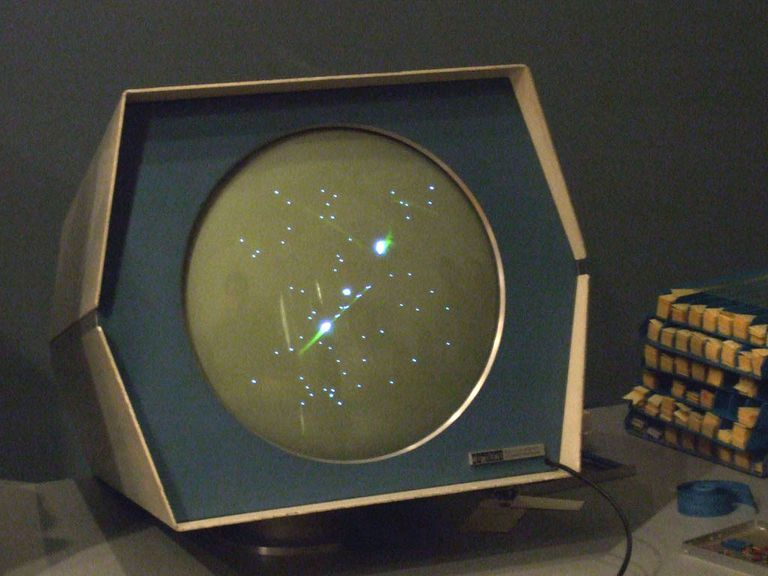
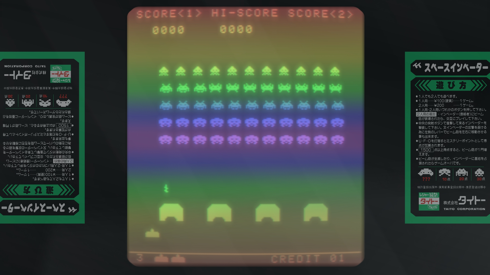
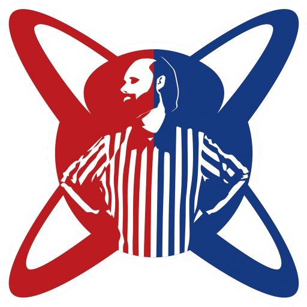
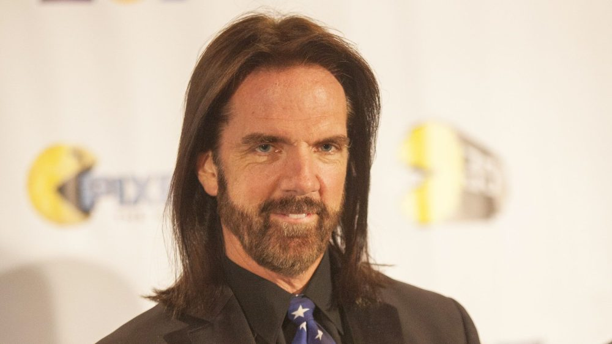
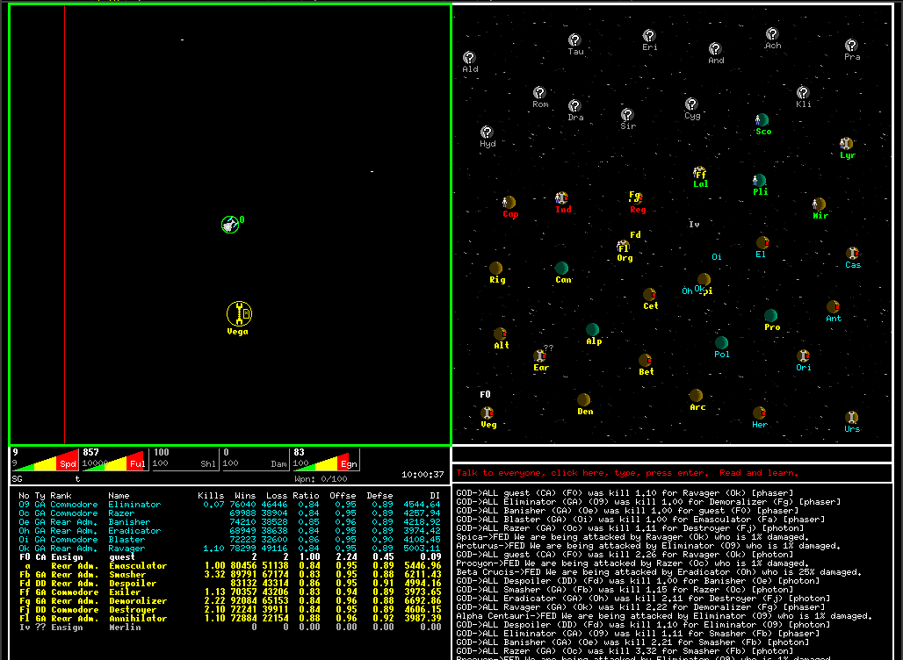
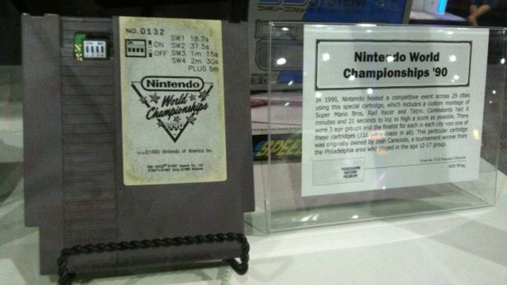
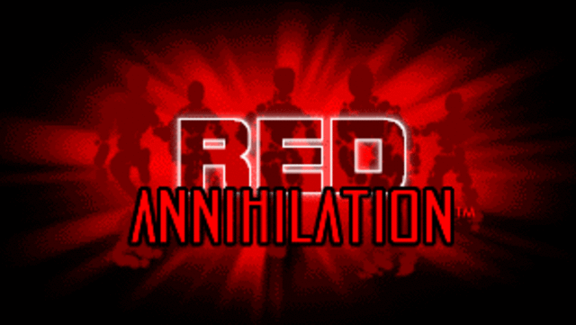
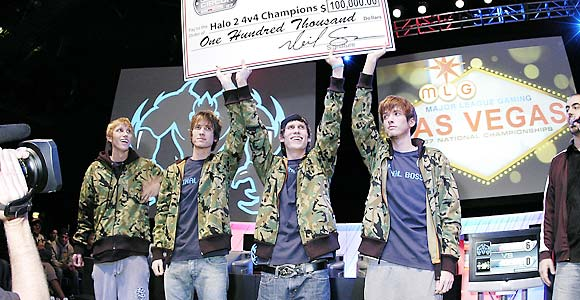

What is E-Sports?
E-Sports, short for Electronic Sports, is a form of competition using video games.
E-Sports mainly uses competitive multiplayer video games a form of entertainment.
The History
1962
The Dawn of Video Games
In 1962, Steve Russell created the first digital video game on the PDP-1 at the Massachusetts Institute of Technology titled "Spacewar!"

The PDP-1 in which "Spacewar!" was built on.
1972
The First Video Game Competition
The first video game competition was held at Stanford University for this game ten years after it's release. They called it the "Intergalactic Spacewar Olympics" and it was held on October 19, 1972. The grand prize winner received a year's subscription for Rolling Stone.
1978 - 1980
Space Invaders
In 1978, Space Invaders was created and released by Tomohiro Nishikado for the Taito 8080 and Atari. However it was in 1980 which the National Space Invaders Superbowl held by Atari Inc in New York.

Space Invaders running on the Taito 8080 Arcade Cabinet.
1981
Twin Galaxies
A man named Walted Day founded a highscore record-keeping company called Twin Galaxies. Today it is known as the official home of video game world records and player rankings. It would promote video games and publicize them through the Guiness Book of World Records.

1985
The Unstoppable Man
In 1985, Billy Mitchell's name was added to the Guiness Book of World Records, making renound world records games such as Pac-Man, Centipede, and BurgerTime.

1988
Going Online
Netrek was one of the first internet games, allowing for gameplay with up to 15 other players. It allowed for cross-platform gaming between Mac OS X, Microsoft Windows, Linux, Unix, and NetBSD. It was the very first online team game.

Netrek for Microsoft Windows.

The special cartridge used at the Nintendo World Championships 1990.
1990
Nintendo World Championships
In 1990, Nintendo of America held the first Nintendo World Championships in Dallas Texas from March 8 - 11. Games were played on the Nintendo Entertainment System. The tournament toured 30 American Cities. The Grand Prize Winner got a cash prize of USD250.
1996
Evo
In 1996 a tournament called "Battle by the Bay" was held specifically for fighting games. The first one was held for Super Street Fighter II Turbo and Street Fighter Alpha 2 both on their own Arcade Cabinets. However it was in 2002 whent his tournament changed its name to "Evo".
1996 - 1997
Quake
In 1996, id Software developed and released Quake for most major platforms at the time. In 1997, the Red Annihilation Tournament was held for the Quake. A total of 2000 participants partook and the competition with a Ferrari as the grandprize. While there were plenty of competitions and tournaments held before it, this was the first to take the name "E-Sports".

The logo for the Red Annhilation Tournament.
1997
Emergence of ESports
Following Quake, emerged a new type of profesional sports tournament organizations specializing in video games. Two of these were the Cyberathlete Professional League (CPL) and the AMD Professional Gamers League (PGL).
It was around the 2000s in which E-Sports really started blossom. As the Internet became more accessible and mainstream, video games also in turn started to benefit from Wi-Fi connectivity features. This lead to multiplayer games becoming more popular.
Games produced during this time include the First Person Shooter "Counter Strike" (2000) developed as a mod for Valve Corporation's "Half-Life", the Multiplayer Online Battle Arena game "Defense of the Ancients" or "DotA" (2003), the sci-fi shooter built for the Xbox "Halo: Combat Evolved" (2001) by Bungie, and many more.
2000 - 2003
The 21st Century
In 2000 the South Korean World Cyber Games was held for games like Unreal Tournament, StarCraft: Brood War, and FIFA 2000. In 2002, the Major League Gaming Corporation was founded. And in 2003, the Electronic Sports World Championship was founded holding games such as Counter-Strike 1.3 and Warcraft III: Reign of Chaos.
2004 - 2006
On the Air
It was the sequel to Halo: Combat Evolved appropriately titled "Halo 2" released in 2004 for Xbox that shook the E-Sports scene. The first televised tournament was the MLG 2006 Pro Circuit featuring Halo 2.

2011
Twitch
Originally known as Justin.tv, Twitch.tv was introduced as an online streaming service akin to Youtube made specifically for live streaming of video games. It is this platform on which E-Sports mainly thrive on today.
2009 - 2013
The Current Competition
It was during this time-period that the current roster of games usually played in ESports were released. These games include the MOBAs "League of Legends" (2009) by Riot Games and "DotA 2" (2013), the RTS game "StarCraft II" (2010) by Blizzard Entertainment, and the FPS game "Counter Strike: Global Offensive" (2012) by Hidden Path Entertainment.
The Future
Now the Esports scene has never seen a higher peak. With multiple sponsored ESports teams and organizations by Intel, Mountain Dew, and Razer, grand prizes as large 11 million USD like in the 2018 Internationals for DotA 2, and Japan introducing ESports in the upcoming 2020 Olympics, it is clear to see that these video games aren't going anywhere any time soon.